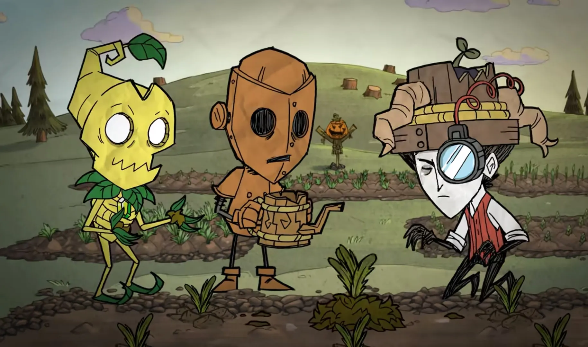

Popis hry
Don‘t Starve je single-player indie survival titul, který vyniká svou skvěle provedenou kombinací náročného přežití, temné atmosféry a skoro až tim-burtonovským vizuálním stylem.
Hra byla vydána v roce 2013 a postupně se rozrostla o několik dlc a samostatný multiplayerový titul Don‘t Starve Together. Ještě dnes jsou všechny verze hry stále aktualizovány a přibývá více kontentu, hráči tak mají důvod se ke hře vracet a hrát ji stále dokola. Komplexnost a propojení všech elementů této hry je rozhodně obdivuhodná.

Platformy:
1. PC (Windows, Mac, Linux) - dostupné na Steamu.
2. PlayStation - konkrétně pro PS3, PS4 a PS Vita.
3. Xbox One
4. Nintendo Switch
5. iOS a Android - mobilní verze s názvem Don't Starve: Pocket Edition.
Klei Entertainment
Klei Entertainment je kanadské nezávislé herní studio založené v roce 2005 v kanadském Vancouveru Jamiem Chengem, bývalým vývojářem společnosti Relic Entertainment. Studio se proslavilo zejména díky originálnímu vizuálnímu stylu, unikátním mechanikám a vysoké variabilitě herních žánrů, které oslovují široké publikum.
Prvním výraznějším titulem bylo Eets (2006), logická hra s kreslenou grafikou, která upoutala pozornost herní komunity. V roce 2010 vydali Shank, akční plošinovku s komiksovou stylizací, následovanou titulem Mark of the Ninja (2012), který si získal uznání za inovativní přístup k žánru stealth.
Největšího úspěchu dosáhli s titulem Don't Starve (2013), survival hrou s temnou estetikou a unikátními mechanikami přežití, která si získala kultovní status a později rozšíření do multiplayer verze Don't Starve Together. Následovaly další úspěšné hry jako Invisible, Inc. (2015), která kombinuje strategii a stealth prvky, a Oxygen Not Included (2019), simulátor přežití v podzemní kolonii.
V roce 2023 společnost Tencent odkoupila majoritní podíl ve studiu, což Klei umožnilo pokračovat ve vývoji s větší finanční stabilitou, aniž by ztratili kreativní nezávislost.